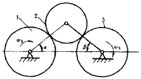
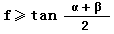
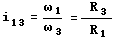
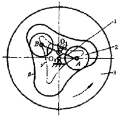
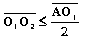
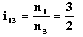

摩擦传动机构
机构示意图
机构特性简介
摩擦轮传动机构

图中所示摩擦轮传动机构由主动轮1通过中间滚轮2带动从动轮3作匀速转动。 滚轮2可自动调节压紧力，能可靠的楔入1和3之间。为保证机构正常工作， 应使最小摩擦系数f和、β角值保持下列关系，当α不等于0、β不等于0时

不考虑滚轮间的滑动，其传动比应为

式中
ω 1 、ω 3 --各为1、3轮的角速度；
R 1 、R 3 --各为滚轮1、3的半径。
内滚轮机构

图中所示内滚轮机构以双臂曲柄1作主动件，通过曲柄两端的滚轮2驱动从动轮3绕固定轴O1与主动件同向匀速转动。滚轮中心A、B相对圆盘3的运动轨迹为摆线γ，是圆盘内侧曲线β的等距线，两线相距滚轮半径r。该机构主、从动轴中心距应符合要求：

否则γ曲线将出现交叉。主、从动轮的传动比为

式中n 1 、n 3 --轮1、3的转速。